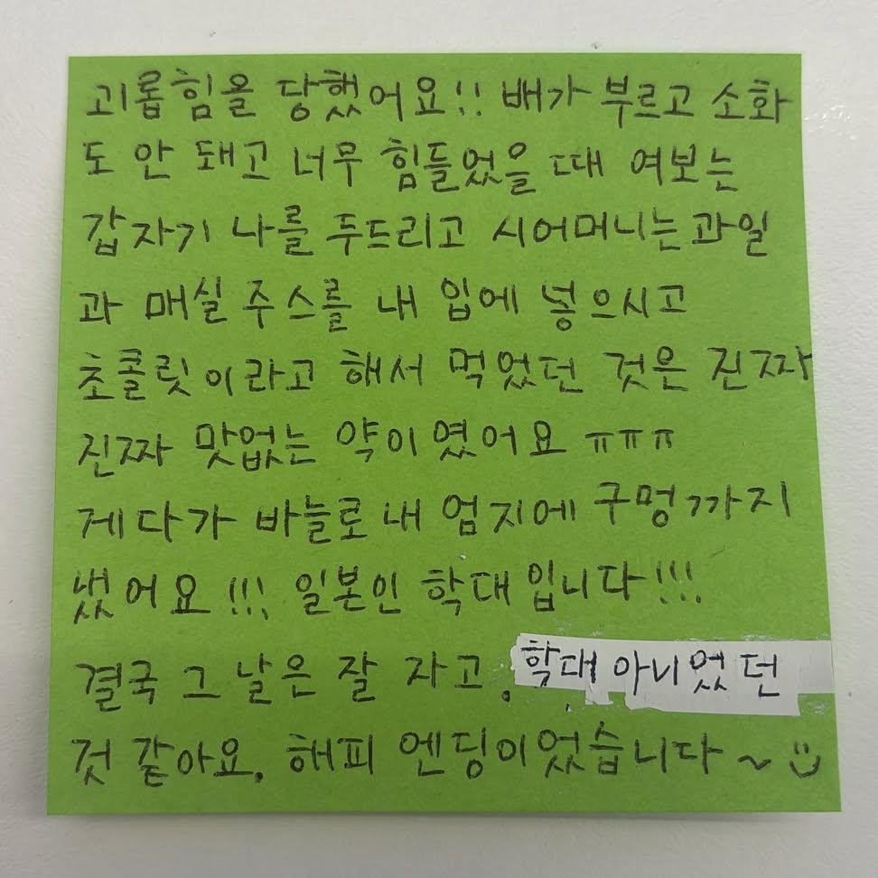
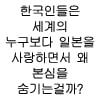

"괴롭힘을 당했어요!!"

"괴롭힘을 당했어요!!"
꺼어억~~~~
매실은 진짜 효과 좋더라
진짜 속 더부룩한데 거기다가 뭘더먹는거 거부감들고 힘든데
한번쭉마시고 좀만 기다리면 요상하게 개운해짐ㅋㅋㅋㅋㅋ
신기해ㅋㅋㅋ
사촌지간인 자두는 포풍설사인데
매실은 태풍을 잠 재움ㅋㅋ
더좋은 푸룬 추천합니다
Deeeeep water
매실에 손까지 땃으면 심했나보네 ㅋㅋㅋ
이순신 장군의 복수다...
손 딸 때 조금 더 깊게 따셨을수도?
예전에 맨발의 겐에서 일본군이 미군 포로에게 침 치료 뜸 치료를 해줬는데
나중에 군사재판때 그 미군이 일본군에게 "내 몸에 바늘을 박고 불 고문을 했다"고 증언했다는 에피소드 생각남.ㅋㅋ
고문 빼고 틀린 말은 아니네 ㅋㅋㅋㅋㅋㅋ
나에게 검은종이(김)를 먹이는 학대도 했다
그것도 있잖아
"바다에서 난 잡초를 억지로 먹였다" = 미역국이었음
그거 걍 미화한거아니냐
김은 백퍼 미화지
식량난에 시달리던 일본애들이 비싸고 보급도 잘 안 되는 김을 포로한테 줄 리가 없으니
만화에서 본거지만 감자같은거 찾아서
같이 먹었는데 이상한 나무뿌리 먹였다고
재판받는 이야기 봤었슴
초콜릿 페이크 ㅋㅋㅋㅋㅋㅋㅋㅋㅋ
매실즙?? 이게 진짜 뻥 내려가던데
일본인 학대 ㅋㅋ
독립투사들의 복수다!
귀여워
정로환은 일본 유래긴하지 ㅋㅋ
ㄹㅇ
손따고 약에 매실액기스까지?? 얼마나 체한거여;;;
러시아를 바른곳으로 보내는약!
정로환 이거 일본꺼아니냐
귀여워 ㅋㅋㅋㅋㅋ 준내 사랑스럽네 ㅋㅋㅋㅋㅋ
선 맥여 ㅋㅋㅋ
진짜 할 수 있는 모든 요법을 다 한...
각시탈이다!!!!
초콜릿 같은 건 뭐임? 환약인거같은데
나도 할머니가 체했을때 줘서 먹어봤는데 정체를 모르겠음...환약은 아니고 엄청 찐득한 검은색 고약 같은건데 맛도 존나 이상함ㅋㅋ
Ai한테 물어보나 매실고라 하네. 색이랑 점도 비슷한것 같은데 맞는듯 ㅋㅋ. 매실을 존나게 졸여서 만든거라네
정로환 아녀?
정로환 같은디....
매실은 진짜 직빵임

이제 고문을 시작하지
야멧때!!
오타이산
저기서 안괜찮아지면 코스하나 더 추가 되는거지
청심환인줄 매실로된 환이란게 있구나
매실액 먹으면 난 취해서 못먹음
저거 진짜 효과있음??
그리고 그냥 약먹으면 되는거 아님?
손땄구만